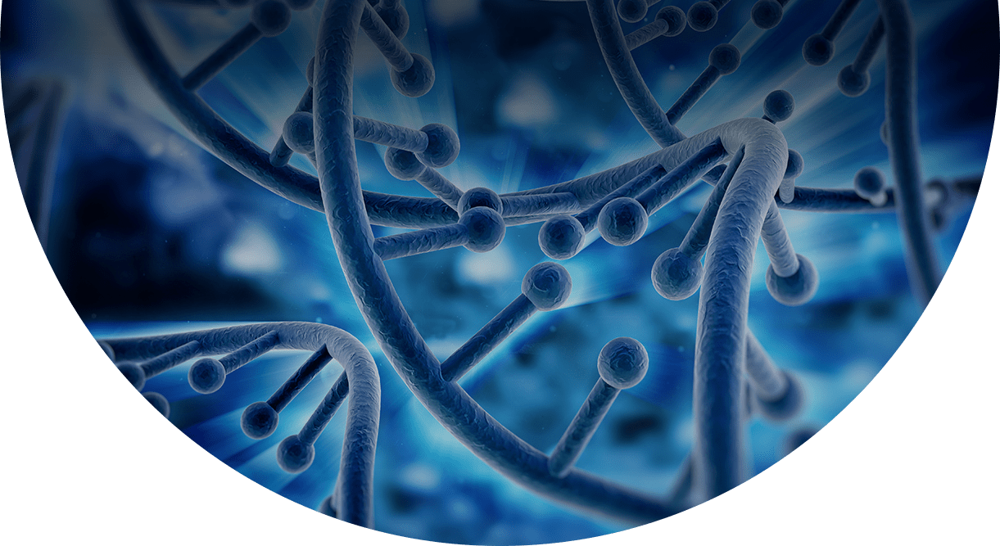

Записи интенсива(внизу страницы)
Курс Метафизика – Исцеление первичной клетки
Старт курса: 26 ноября
ЗаписатьсяЗаписи интенсива(внизу страницы)
Старт курса: 26 ноября
ЗаписатьсяМетафизика – исцеление первичной клетки. Мощная технология по исцелению клетки, запустившей заболевание. Серьезная болезнь возникла ни за один день. Этому предшествовали годы, а то и несколько поколений травм. Но так же существуют и конверсионные заболевания, которые регрессируют мгновенно из психоэмоционального стресса в выраженный психосоматоз. Если заболевание носит родовой характер, необходимо исцелять ДНК структуру клеток. Если же заболевание носит психоэмоциональный характер, оно поддается коррекции через исцеление травм. Задача Метафизики отыскать первичную клетку, запустившую механизм заболевания и исцелить. Исцеляя клетку, исцеляем весь организм в целом

Запись занятия будет здесь 21.11, после 12:00 мск
Занятие состоится 21.11, в 19:00 мск
Запись занятия будет здесь 22.11, после 12:00 мск
Занятие состоится 22.11, в 19:00 мск
Запись занятия будет здесь 23.11, после 12:00 мск
Купить записи интенсива за 539р.
Купить